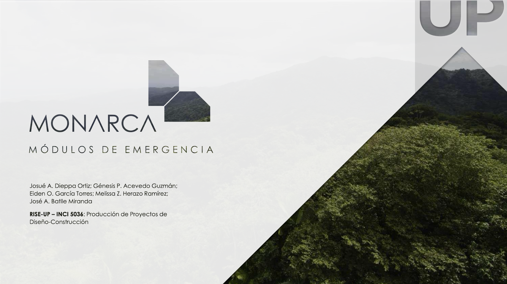

Emergency Shelter and Connectivity for Rural Communities After Natural Disasters: A Case Study
Affiliations
- Civil Engineering and Surveying Department, University of Puerto Rico, Mayagüez
- Electrical and Computer Engineering Department, University of Puerto Rico, Mayagüez
- School of Architecture, University of Puerto Rico, Río Piedras
Contribution
Led the design and analysis of the Photovoltaic Energetic System integrated into the modular emergency shelter. This included assessing solar irradiation data, determining system sizing for off-grid operation, and evaluating the shelter's capacity to provide reliable and sustainable energy during post-disaster conditions.
